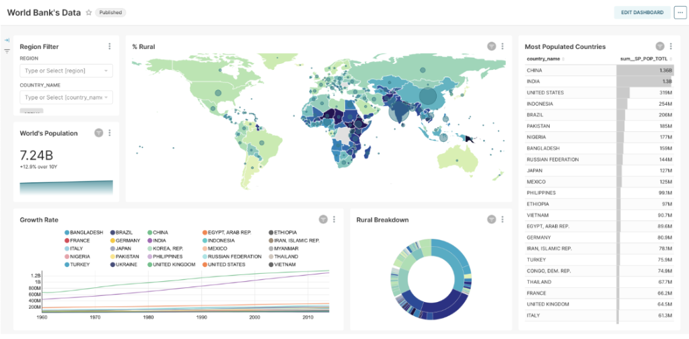

Propuesta para aprobación · Noviembre 2026
Plataforma de Analítica Autoservicio
Dimensión, alcance y arquitectura. El negocio arma sus propios tableros; detrás, una base robusta de datos y medidas certificadas.
El problema · Hoy con Power BI Server
Cada reporte redefine sus métricas
Números que no cuadran
En Power BI Report Server cada archivo redefine sus cálculos; la misma venta da distinto según el reporte y se pierde confianza.
El área de datos es el cuello de botella
Los usuarios no pueden armar sus propios tableros: cada cambio o reporte nuevo entra en la cola técnica.
Excel como destino final
Al no tener autoservicio gobernado, el negocio exporta a Excel y rearma a mano, sin versiones ni seguridad.
La propuesta
Medidas definidas una vez.
Tableros creados por el negocio.
Lo que ve el usuario
Arrastrar y soltar medidas certificadas · catálogo de gráficos · plantillas por área · sin DAX ni SQL
La robustez de atrás
Lago de datos desde el DWH y los sistemas · modelado · capa semántica con medidas certificadas · seguridad por fila · memoria rápida (resúmenes precalculados)
Benchmark 2026
Qué tomamos de cada plataforma
| Plataforma | Dónde viven las medidas | Lo que adoptamos |
|---|---|---|
| Power BI / Fabric | Modelo semántico con DAX y RLS | Un modelo compartido para muchos reportes |
| Databricks AI/BI | Metric views en Unity Catalog (YAML) | Medidas separadas de dimensiones; certificación |
| Looker | LookML versionado en git | Medidas como código, con revisión y pruebas |
| Tableau | Orígenes publicados + Pulse | Métricas seguibles con alertas |
| Superset / Metabase | Datasets y modelos open source | Base visual open source y sin licencias |
| Cube Core / dbt | Capa semántica independiente del front | El corazón de nuestra capa semántica |
Conclusión del benchmark
Todos los líderes convergen en el mismo patrón: medidas gobernadas una vez y el negocio compone encima.
Por eso la capa semántica es una pieza propia e independiente, y el front se vuelve intercambiable.
Dimensión · Cambio de roles frente a hoy
Tres perfiles, una sola fuente de verdad
Consume
Gerencia, tiendas, comercial
Ve tableros publicados, filtra, exporta y recibe alertas con números consistentes.
Crea (autoservicio)
Analistas de área
Arman sus propios tableros con medidas certificadas y plantillas, sin entrar a la cola técnica.
Garantiza y evoluciona
Equipo / Analistas de datos
Dejan de construir y mantener cada tablero en cola; se enfocan en ingesta, modelado, crear y certificar medidas, SQL, seguridad y optimización central.
Diferencia frente a hoy: actualmente el analista de datos crea cada tablero y carga con su mantenimiento y optimización junto a toda la cola pendiente. Con esta plataforma, optimiza una sola base y el negocio compone encima.
Por confirmar: usuarios y concurrencia, volumen del DWH, sistemas fuente, frecuencia de actualización, nube u on-premise.
Alcance
El MVP: un dominio de punta a punta
En el MVP · Ventas y Margen
- Ingesta del DWH y un sistema fuente
- Lago bronce → plata → oro de Ventas
- 20–30 medidas certificadas
- Constructor de arrastrar y soltar
- 10–12 gráficos y 3 plantillas
- Seguridad por fila e inicio de sesión corporativo
Fases siguientes
- Inventario y Promociones
- Medidas de equipo y certificación
- Alertas y suscripciones por correo
- Preguntas en lenguaje natural (IA)
- Modelos predictivos de demanda
Fuera de alcance: reemplazar el DWH actual, migrar todos los reportes existentes, usuarios externos.
Arquitectura de referencia
Cinco capas; solo la última cambia
1 · Ingesta
Airbyte / dlt para cargas · Debezium CDC desde ERP/POS · Dagster orquesta
2 · Lago de datos
Apache Iceberg sobre almacenamiento de objetos · dbt · bronce → plata → oro
3 · Motor de consulta
Trino en producción · DuckDB en desarrollo y pruebas
4 · Capa semántica
Cube Core: medidas certificadas en YAML (git), seguridad por fila, caché y API
5 · Experiencia
Opción A: front propio en React · Opción B: Apache Superset personalizado
Transversal a todas las capas: SSO y roles, catálogo y linaje, calidad de datos, monitoreo y costos, todo como código.
Las dos opciones
Dos caminos sobre la misma base (ambos sin licencias)
Opción A · $0 licencias
Interfaz hecha desde cero
Programamos toda la pantalla a la medida (React + ECharts) sobre las medidas de Cube.
- Experiencia 100% a la medida
- Plantillas e IA donde queramos
- Más tiempo y mantenimiento propio
7–9 meses · 6–8 personas
Opción B · recomendada · $0 licencias
Interfaz base open source
Adaptamos Apache Superset (gratuito, licencia Apache 2.0) con nuestra marca, conectado a Cube por su API SQL.
- Pantalla probada, 40+ gráficos listos
- Misma plataforma propia, mitad de tiempo
- Menos control fino de la experiencia
4–5 meses · 4–5 personas
Estimaciones referenciales; se ajustan al confirmar dimensión e infraestructura.
Cómo se ve la Opción B · $0 licencias
Apache Superset conectado a nuestro modelo

Conexión al modelo
DWH / Sistemas → Lago Iceberg + dbt (Oro) → Trino → Cube Core (API SQL tipo PostgreSQL) → Apache Superset
Comparativa
B llega en la mitad del tiempo
| Criterio | Opción A · Interfaz desde cero | Opción B · Base Superset |
|---|---|---|
| Tiempo al MVP | 7–9 meses | 4–5 meses |
| Experiencia de arrastrar y soltar | Excelente, a la medida | Buena, estándar de Superset |
| IA integrada | Nativa en el producto | Vía complemento |
| Costo de licencias | Ninguno | Ninguno |
| Riesgo técnico | Medio-alto | Bajo-medio |
| Mantenimiento | Front propio a largo plazo | Actualizar versiones |
| Reutilización al cambiar | Base y medidas 100% | Base y medidas 100% |
Recomendación
Opción B ahora.
Opción A como evolución.
Validamos adopción y medidas con usuarios reales en 4–5 meses. Pasar al front propio solo cambia la capa visual: datos, medidas y seguridad se reutilizan.
Roadmap · Opción B
MVP en producción en el mes 5
Fase 0 · Mes 1
Fundaciones
Infra, lago, SSO y CI/CD; agentes configurados
◆ Ambiente listo
Fase 1 · Meses 2–3
Datos y medidas
DWH + 1 sistema; 20–30 medidas conciliadas
◆ Medidas cuadran
Fase 2 · Meses 4–5
MVP autoservicio
Superset + Cube, 3 plantillas, piloto con campeones
◆ Piloto aprobado
Fase 3 · Meses 6–9
Escalar
Más dominios, alertas, piloto de IA; decisión sobre A
◆ Adopción ≥ meta
Fase 4 · Mes 10+
Evolución
Front propio (A) y modelos predictivos
Cada fase termina en una puerta (◆) con un criterio verificable. Ningún tablero se abre a usuarios hasta que las medidas cuadren con el DWH.
Ejecución
Agentes Antigravity, revisados por humanos
| Agente | Qué produce | Aprueba |
|---|---|---|
| Plataforma | Infraestructura como código, CI/CD, monitoreo | Líder técnico |
| Ingesta | Conectores al DWH y sistemas, capa bronce | Ingeniero de datos |
| Modelado | Modelos dbt plata y oro, pruebas de calidad | Ingeniero analítico |
| Semántico | Medidas en YAML de Cube, seguridad por fila | Analítico + negocio |
| Conciliación (QA) | Compara cada medida contra DWH y reportes | Ingeniero analítico |
| Experiencia | Superset: tema y plantillas (A: código del front) | Líder técnico + UX |
| Documentación | Catálogo de medidas y guías de usuario | Dueño de negocio |
Cada agente trabaja en una rama de git; nada se integra sin revisión humana y pruebas en CI.
Cómo se organiza
Un monorepo: 5 módulos y contratos compartidos
0 · Contratos (contracts/)
Esquemas de tablas Oro, catálogo de medidas, reglas RLS y datos sintéticos — se acuerdan primero
1 · Infraestructura
Docker Compose, MinIO/S3, Iceberg, Trino, Keycloak y pipelines de CI/CD
2 · Ingesta (Bronce)
Conectores Airbyte/dlt/CDC y orquestación Dagster desde DWH y sistemas fuente
3 · Transformación (dbt)
Modelos medallón Bronce → Plata → Oro y pruebas automáticas de calidad
4 · Semántica y BI
Cube Core (medidas YAML + RLS) y Apache Superset (tema, roles y plantillas)
Cada módulo tiene su propio AGENTS.md: un agente puede leer contracts/, pero solo edita su módulo.
Equipo de 3 + agentes
Roles claros y dos carriles en paralelo
Dirección · Jefe (Product Owner)
Gobierno y aprobación
Prioriza alcance y medidas con negocio, desbloquea accesos e infraestructura, y aprueba cada hito (Go/No-Go) al cierre del sprint.
Carril 1 · Rafael / Osmerlys + agentes
Datos (Módulos 2 y 3)
Opera sus agentes de ingesta y modelado dbt hasta capa Oro. Valida sus tablas contra el esquema firmado en contracts/.
Carril 2 · Osmerlys / Rafael + agentes
Semántica y BI (Módulos 4 y 5)
Opera sus agentes de Cube, RLS y Superset usando datos sintéticos en DuckDB, sin esperar a la ingesta real.
Agentes creados en conjunto
En Fase 0 definimos juntos las reglas, prompts y fronteras (AGENTS.md) de todos los agentes. Luego cada uno dirige su equipo de agentes en su carril y hacemos revisión cruzada humana.
Ejemplo práctico · Ventas y Margen
Cómo trabajamos sin esperar y cuándo nos unimos
Día 1 (juntos) · El molde
Acordamos en contracts/ las columnas exactas de oro.fact_ventas (fecha, id_tienda, id_producto, venta_neta, costo_total, unidades) y generamos 2.000 filas de prueba en DuckDB.
En paralelo · Persona A (Datos)
Trae y limpia los datos reales
Conecta DWH y ERP, limpia en dbt (Bronce → Plata → Oro) y entrega la tabla real oro.fact_ventas cumpliendo exactamente las mismas 6 columnas del contrato.
En paralelo · Persona B (Semántica + BI)
Construye medidas y tableros
Una fórmula solo necesita los nombres de columna: escribe Venta Neta, Margen %, permisos por tienda y los 3 tableros en Superset, probando en vivo con las 2.000 filas de prueba.
Cierre de sprint (cada 1–2 sem)
1. Validación automática del molde → 2. Cambio de enchufe en Cube (de datos de prueba a datos reales, sin tocar medidas ni tableros) → 3. Conciliación 100% contra DWH / Power BI.
Metodología de trabajo
Scrum ligero por contratos (Sprints de 2 semanas)
Día 1 · Los 3 (1 hora)
1 · Planning y Contratos
El jefe fija la meta del sprint. Rafael y tú congelan contracts/ (tablas, medidas y fixtures) antes de lanzar agentes.
Días 2–8 · En paralelo
2 · Ejecución + Daily 10 min
Cada uno trabaja con su equipo de agentes en ramas aisladas. Sincronización diaria de 10 min y revisión cruzada de PRs.
Día 9 · Rafael y tú (2 h)
3 · Integración y QA
Cambio de enchufe en Cube (prueba → datos reales) y corrida automática de conciliación contra DWH / Power BI.
Día 10 · Los 3 (45 min)
4 · Demo y Go / No-Go
Demo en vivo con datos reales conciliados. El jefe valida valor de negocio y aprueba el paso al siguiente sprint.
Regla de cierre (Definition of Done): nada se entrega sin pruebas de contrato en verde, conciliación 100% contra DWH y aprobación humana.
Riesgos
El mayor riesgo es la confianza
| Riesgo | Mitigación |
|---|---|
| Medidas que no cuadran | Conciliar cada medida contra el DWH antes de certificarla |
| Baja adopción | Plantillas desde el día 1, campeones por área, capacitación corta |
| Calidad en sistemas fuente | Reglas en capa plata con alertas al dueño del dato |
| Rendimiento con muchos usuarios | Preagregaciones y caché en Cube; Trino según concurrencia |
| Código de agentes sin control | Ramas, revisión humana obligatoria y pruebas en CI |
Decisión
Lo que pedimos aprobar hoy
- Alcance del MVP: Ventas y Margen de punta a punta
- Arquitectura de referencia de cinco capas
- Opción B para el MVP, con A como evolución
- Arranque de la Fase 0 con agentes Antigravity
Antes de la Fase 1: confirmar dimensión (usuarios, volumen, fuentes, infraestructura) y taller de medidas con negocio.